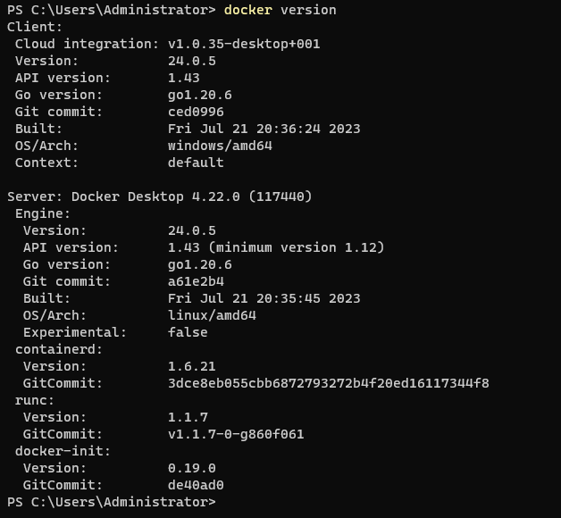

Docker
题记
这二天闲的无事，折腾一下我的笔记本，本来先打算装个linux 环境。 研究了vagrant , virtualbox, WSL ，最后决定研究下docker。 然后发现有个Docker Destop, 先把它装了再说。 安装时查看了下系统需求， 好险，我的系统版本刚好达到。 需要升级WSL 
运行docker Desktop 成功了
课程笔记
解决了什么问题 开发和运行环境不一致
仓库名，TAG 都是
基本概念
Image 镜像 Container 容器 Repository 仓库 hub.docker.com
client - server 架构 client 发命令给server ， server守护进程执行命令
命令
docker images docker search docker pull docker ps -a docker run -it ubuntu /bin/bash docker run -d ubuntu ctrl + p + q docker start | stop | restart docker attach docker exec -it docker container prune 移除所有未运行容器 docker build
docker top docker inspect